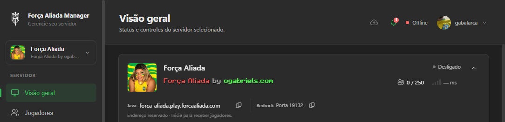
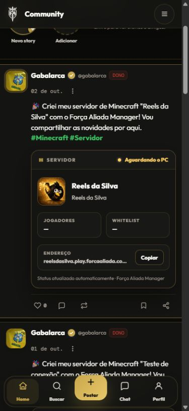

Para quem administra
O Manager concentra tarefas antes dispersas entre pastas, comandos e configurações. O aplicativo opera no PC; o console web acrescenta uma visão da organização, da equipe e das ações remotas.
Produto próprio • Desde novembro de 2025
Da comunidade a um ecossistema de produtos. Um aplicativo para cuidar de servidores, uma rede social para conectar jogadores e serviços que fazem essas experiências trabalhar juntas.
Manager + CommunityOperação de servidores e comunidade


Conduzo a visão de produto, prioridades, integrações e decisões técnicas. Trabalho em infraestrutura, revisão de implementação e testes, com colaboradores e apoio de Claude Code e Codex no desenvolvimento. A comunidade nasceu em 2021; a frente de software começou em novembro de 2025.
01 / Origem e direção
Operar um servidor envolve mais que iniciá-lo: versões, acesso, backups, conectividade e comunicação com a comunidade. A Força Aliada começou nesse contexto e passou a reunir ferramentas para as pessoas que administram e participam desses ambientes.
O Manager concentra tarefas antes dispersas entre pastas, comandos e configurações. O aplicativo opera no PC; o console web acrescenta uma visão da organização, da equipe e das ações remotas.
O Community organiza perfis, publicações e conversas. Um servidor pode aparecer no feed com seu próprio contexto, conectando a gestão técnica à presença da comunidade.
02 / Os produtos
O aplicativo, o console e a rede social têm tarefas próprias. Conta, APIs e serviços compartilhados conectam essas superfícies sem exigir que a pessoa entenda a arquitetura para usá-las.
Força Aliada Manager
Um aplicativo Windows para criar, importar e administrar servidores de Minecraft. Ele reúne visão geral, terminal, jogadores, arquivos, backups, agenda e configuração num mesmo lugar.
O console web amplia essa operação para organizações: computadores vinculados, servidores, papéis da equipe e atividade. Uma ação remota segue regras de autorização e só é concluída depois que o aplicativo confirma o resultado.
Fase final de desenvolvimento. Aplicativo e console continuam sendo refinados e validados.

Força Aliada Community
Uma rede social com perfis, publicações com mídia, respostas, reações, stories, notificações e conversas. O conteúdo dos servidores se integra ao feed, aproximando quem administra de quem joga.
O trabalho inclui fluxos sociais, organização do perfil, moderação, navegação no celular e coerência dos estados. Um cartão de servidor comunica seu contexto sem pedir que a pessoa saia da conversa para entendê-lo.
Em desenvolvimento intermediário, com recursos implementados e experiências em evolução.

03 / Decisões de produto e engenharia
O trabalho não termina na primeira tela funcionando. Conduzo a investigação dos problemas, oriento a implementação e confiro o que acontece quando a conexão falha, uma ação é repetida ou o usuário precisa continuar em outra superfície.
A operação é desacoplada da interface. O agente mantém estado, agenda e comunicação; aplicativo e console apresentam informações e ações. Isso evita tratar o fechamento da janela como se fosse o fim da operação.
Uma ação remota tem alvo, autorização, prazo e proteção contra repetição. O resultado volta como confirmação. A interface diferencia solicitação, execução e falha, em vez de anunciar sucesso antes da resposta real.
Fluxos de whitelist, identidade e conectividade precisam validar o resultado no ambiente. A UX mantém erros recuperáveis e distingue endereço reservado, conexão ativa e permissão efetivamente aplicada.
04 / Como as partes se conectam
O backend coordena conta, comunidade e operação. O aplicativo cuida das tarefas no PC. A interface web permite acompanhar os produtos e agir sobre eles com o contexto de cada conta e organização.
Explore o papel de cada superfície. As telas são capturas do produto; esta visualização explica a arquitetura.
O aplicativo e o agente cuidam dos arquivos, processos e tarefas do servidor. O console web solicita ações; a conclusão depende da confirmação de execução.
Perfis, posts, respostas e conversas dão continuidade à experiência. O cartão de servidor conecta esse conteúdo aos dados operacionais do Manager.
Node.js e Express organizam módulos da API; PostgreSQL persiste dados e relações. As integrações incluem identidade Microsoft/Xbox, mídia, comunicação e cobrança. Conta, produtos e suporte usam regras compartilhadas de acesso, com responsabilidades separadas por módulo.
O Manager é construído em Electron. O agente local conecta a operação do PC ao console web. No plano de controle, organizações e papéis limitam o acesso; comandos assinados têm proteção contra repetição, expiração e confirmação de execução. A interface acompanha estados e resultados em vez de assumir sucesso.
O feed combina regras de recuperação, afinidade, diversidade e ordenação. Isso é uma camada de recomendação do projeto, distinta de geração de texto com IA. Perfis, relações sociais, chat e conteúdo de servidor compartilham contexto de conta; novos recursos são ativados e refinados progressivamente.
A implementação de suporte consulta a base oficial, retorna fontes e admite transferência para atendimento humano. A integração de IA tem limites de uso e fallback; credenciais são removidas antes dos prompts. Ações que alteram o sistema pedem confirmação, em vez de executar mudanças silenciosamente.
Cloudflare participa da entrega web, DNS e serviços do projeto. Claude Code apoia principalmente backend e segurança; Codex, interfaces e UX. Minha atuação conecta planejamento, revisão, testes e ajustes de integração. Avalio os fluxos reais e as situações de erro, além da aparência final.
05 / Continuidade
O Manager está na fase final de desenvolvimento; o Community, em estágio intermediário. A comunidade existe desde 2021, mas os produtos de software são mais recentes. A próxima etapa é consolidar fluxos e validações, mantendo a experiência compreensível à medida que o ecossistema cresce.